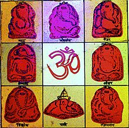

|  |
Ashtavinayaka:- Main artical:-Ashtavinayaka:- Ashtavinayaka (??????????) literally means "eight Ganeshas" in Sanskrit. Ganesha is the Hindu deity of prosperity and learning. The term refers to a pilgrimage to the eight Hindu temples in Maharashtra state of India that house eight distinct idols of Ganesha, in a pre-ascertained sequence. The Ashtavinayaka yatra or pilgrimage covers the eight ancient holy temples of Ganesha which are situated around Pune. Each of these temples has its own individual legend and history, as distinct from each other as the murtis in each temple. The form of each murti of Ganesha and His trunk are distinct from one another. -:The visiting Rules of yatra:- The eight temples/idols of the Ashtavinayak in their religious sequence are: According to Shastra, first you have to visit Moreshwar of Moregaon. Then visit Siddhatek, Pali, Mahad, Thevur, Lenyandri, Ozar, Ranjangaon, and then again Moregaon will end your Ashtavinayak Yatra. Some of these murtis are called Swayambhu effigies, or the self-existent in Sanskrit. This is to indicate that no human created these murtis, they were found completely formed by nature. |